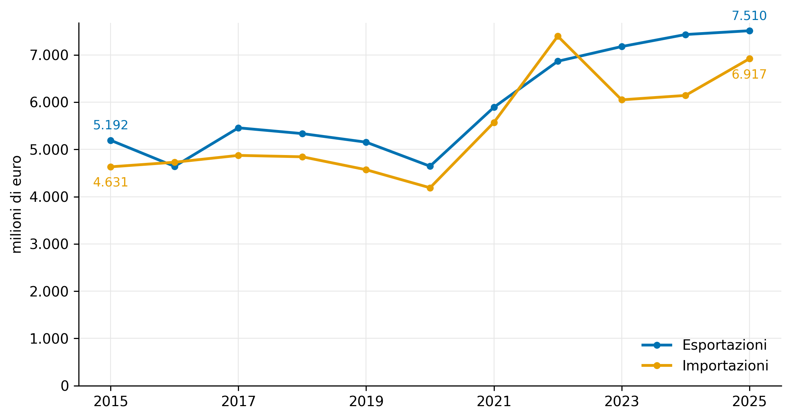
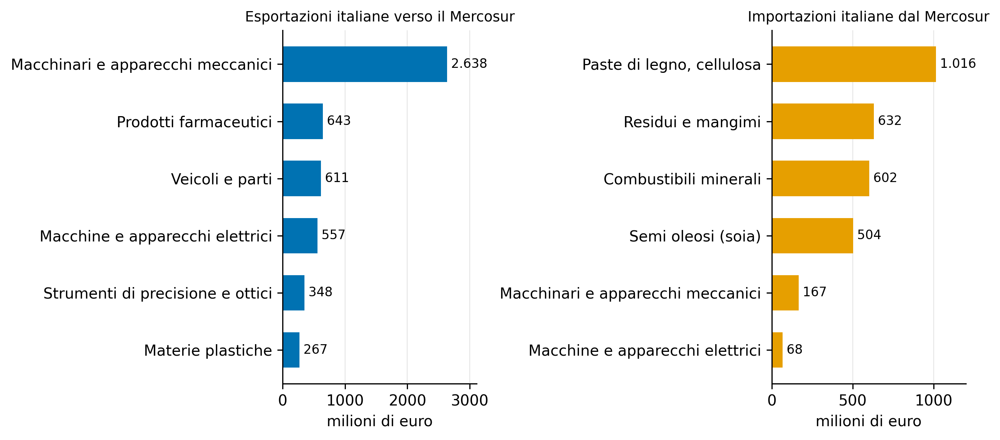
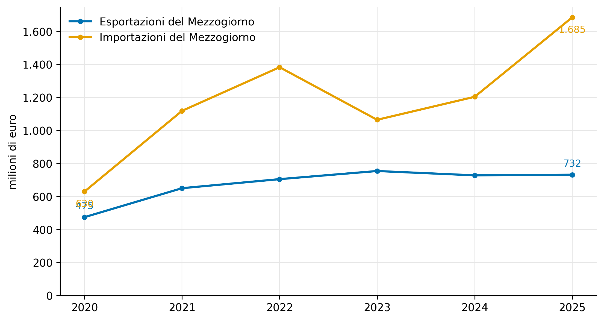
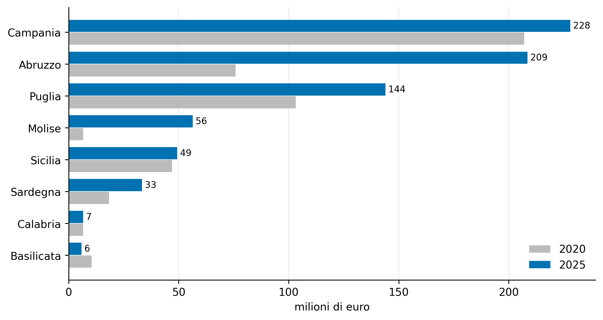

Mercosur e le imprese del Mezzogiorno
L’Accordo UE-Mercosur, l’interscambio dell’Italia e del Sud, le implicazioni per il credito
Paolo Volterra ![]()
L’Accordo di partenariato UE-Mercosur, firmato nel gennaio 2026 dopo venticinque anni di negoziato, è entrato nella sua parte commerciale in applicazione provvisoria il 1° maggio 2026. Il documento ricostruisce che cosa prevede l’accordo, colloca il Mercosur nella geografia commerciale mondiale, quantifica l’impatto atteso sull’Europa e misura l’interscambio dell’Italia con il blocco a partire dai dati doganali. Su base Eurostat, nel 2025 l’Italia ha esportato beni verso i quattro Paesi del Mercosur per 7,5 miliardi di euro, con un avanzo di 0,6 miliardi e una concentrazione dell’export in macchinari, farmaceutica, veicoli e prodotti elettrici: sono i comparti su cui i dazi del Mercosur, oggi compresi tra il 14 e il 35 per cento, si azzerano. Il Mezzogiorno presenta un quadro rovesciato: nel 2025 ha esportato verso il blocco 732 milioni di euro e ne ha importati 1,7 miliardi, con un disavanzo in ampliamento; pesa circa un decimo dell’export nazionale verso il Mercosur e circa un quarto dell’import. L’ultima sezione esamina le implicazioni per l’attività bancaria di sostegno all’internazionalizzazione.
Mercosur, Unione europea, politica commerciale, dazi, Mezzogiorno, interscambio, internazionalizzazione, trade finance
Versione citabile su Zenodo, con il PDF: doi.org/10.5281/zenodo.22172045.
1 Che cos’è il Mercosur e che cosa prevede l’accordo
Il Mercosur è l’unione doganale che riunisce Argentina, Brasile, Paraguay e Uruguay. Conta circa 271 milioni di abitanti e un prodotto interno lordo dell’ordine dei 3.100 miliardi di dollari, pari a poco più del 3 per cento del prodotto mondiale e a circa la metà dell’economia dell’America Latina. Il Brasile ne rappresenta da solo circa tre quarti, sia dal lato dell’economia sia dal lato degli scambi con l’estero; l’Argentina è il secondo Paese, mentre Paraguay e Uruguay sono economie piccole. La struttura produttiva del blocco è specializzata nelle materie prime: prodotti agricoli, alimentari e industria estrattiva rappresentano oltre il 60 per cento delle esportazioni, mentre le importazioni sono concentrate in beni intermedi chimici, meccanica, elettronica e autoveicoli, voci per le quali il Mercosur registra disavanzi strutturali [1].
Considerato insieme all’Unione europea, il mercato che l’accordo mette in comunicazione supera i 770 milioni di persone e un prodotto lordo combinato vicino ai 18.000 miliardi di euro, circa un quarto del prodotto mondiale. Per l’Unione, tuttavia, il Mercosur pesa soltanto attorno al 2 per cento del commercio complessivo di beni, sebbene rappresenti oltre il 10 per cento delle importazioni extra-europee di alimenti e materie prime; per un Paese come la Spagna il peso relativo del blocco è circa doppio [2].
1.1 Il negoziato e l’entrata in vigore
Il negoziato è stato avviato nel 1999. Dopo un’intesa di principio sul pilastro commerciale raggiunta nel 2019, l’accordo politico sull’intero pacchetto è arrivato nel dicembre 2024. Nel settembre 2025 la Commissione europea ha presentato il testo definitivo e ne ha proposto la suddivisione in due strumenti giuridici distinti:
- l’Accordo di partenariato (EMPA), che copre anche materie di competenza degli Stati membri — aspetti fiscali, lavoro, ambiente, parte della disciplina degli investimenti — e richiede perciò la ratifica dei ventisette parlamenti nazionali;
- l’Accordo interinale sul commercio (ITA), che isola la sola parte commerciale, di competenza esclusiva dell’Unione, e può quindi entrare in applicazione provvisoria con il solo via libera del Consiglio e del Parlamento europeo.
Il Consiglio ha autorizzato la firma a maggioranza qualificata il 9 gennaio 2026 e l’accordo è stato firmato in Paraguay il 17 gennaio. Il 21 gennaio il Parlamento europeo ha chiesto un parere alla Corte di giustizia dell’Unione sulla compatibilità dell’Accordo di partenariato con i Trattati, sospendendone di fatto la ratifica per un periodo stimato in sedici-diciotto mesi; la richiesta non riguarda l’Accordo interinale, che è entrato in applicazione provvisoria il 1° maggio 2026. Dal lato sudamericano la ratifica si è completata con il Brasile a febbraio e il Paraguay a marzo 2026 [3], [4], [5]. La pubblica amministrazione italiana ha diffuso tra aprile e maggio 2026 le prime istruzioni operative per l’applicazione del trattamento preferenziale [6].
1.2 Il contenuto commerciale
Il dazio effettivo medio applicato dal Mercosur alle merci europee — calcolato come media ponderata per i flussi — scende dall’11 per cento circa all’1 per cento; quello applicato dall’Unione alle merci del Mercosur scende dal 4 al 2 per cento circa. L’eliminazione riguarda oltre il 90 per cento delle linee tariffarie, con periodi di transizione fino a quindici anni per i prodotti più sensibili [2]. I dazi che il Mercosur applica oggi ai manufatti europei — ricambi per autoveicoli, macchinari, prodotti chimici e farmaceutici, tessile, calzature — sono compresi tra il 14 e il 35 per cento; sui prodotti alimentari trasformati raggiungono il 20-35 per cento [2], [7].
Circa il 10 per cento dei prodotti è escluso dalla liberalizzazione o ammesso a dazio ridotto solo entro un contingente quantitativo, oltre il quale si applica il dazio precedente. Dal lato europeo lo schema riguarda in particolare i prodotti di origine animale. Per la carne bovina il contingente è fissato a 99.000 tonnellate, pari a circa l’1,5 per cento della produzione dell’Unione, con un dazio entro quota del 7,5 per cento; sono previsti contingenti anche per pollame, carne suina, zucchero, etanolo, riso e miele [2], [7], [8].
L’accordo introduce inoltre alcuni elementi non tariffari di rilievo:
- una clausola di salvaguardia bilaterale — la prima in un accordo commerciale dell’Unione — che consente di sospendere le concessioni quando le importazioni crescono almeno del 5 per cento e i prezzi all’importazione scendono almeno del 5 per cento rispetto a quelli interni; le misure possono essere adottate rapidamente e anche quando il danno è concentrato in un solo Stato membro [3];
- l’apertura reciproca degli appalti pubblici, inedita per il Mercosur, che non aderisce all’accordo plurilaterale dell’Organizzazione mondiale del commercio in materia: finora le imprese europee potevano concorrere solo attraverso società controllate locali [2], [9];
- la protezione di oltre 340 indicazioni geografiche europee, delle quali 57 italiane [7], [10];
- per le materie prime critiche, il divieto di tasse e restrizioni all’esportazione e la fine dell’escalation tariffaria che oggi penalizza i prodotti trasformati: il Brasile è il primo fornitore europeo di niobio, e figura tra i principali per tantalio e vanadio, mentre l’Argentina dispone di riserve di litio [2], [11].
Le misure sanitarie e fitosanitarie e gli standard tecnici dell’Unione non sono oggetto di deroga [2].
2 Il quadro mondiale
Negli anni Duemila l’Unione europea era il primo partner commerciale del Mercosur, con una quota attorno al 27 per cento delle esportazioni del blocco, mentre la Cina pesava meno del 5 per cento. La Cina ha superato l’Unione tra il 2016 e il 2017 ed è oggi il primo partner, con circa un quarto sia delle esportazioni sia delle importazioni del Mercosur; l’Unione è seconda, con una quota dell’ordine del 15 per cento delle esportazioni e del 19 per cento delle importazioni del blocco, gli Stati Uniti terzi [1].
In questo contesto l’accordo ha per l’Unione una funzione di diversificazione: riduce la dipendenza da singoli fornitori di materie prime — in particolare dalla Cina per alcuni minerali critici — e apre uno sbocco alternativo in una fase di aumento delle barriere commerciali sui mercati tradizionali. I rischi segnalati nel dibattito riguardano la coerenza ambientale — il legame tra espansione delle esportazioni agricole del Mercosur e deforestazione — e l’incertezza sui tempi di ratifica dell’Accordo di partenariato, che la clausola di salvaguardia e la struttura a due strumenti attenuano ma non eliminano [2], [12].
3 L’impatto sull’Europa
L’analisi economica condotta dalla Commissione europea sul testo negoziato stima, all’orizzonte 2040 e con ipotesi prudenziali che considerano solo la riduzione dei costi commerciali, un aumento delle esportazioni dell’Unione verso il Mercosur di 48,7 miliardi di euro, pari al 39 per cento, e un incremento del prodotto interno lordo dell’Unione di 77,6 miliardi di euro, lo 0,05 per cento. Per il Mercosur l’aumento delle esportazioni verso l’Unione è stimato in 8,9 miliardi di euro, il 16,9 per cento, con un effetto sul prodotto dello 0,25 per cento. La riduzione della produzione nei settori agricoli europei più esposti è contenuta entro l’1 per cento. I comparti europei che beneficiano maggiormente dell’aumento delle esportazioni sono gli autoveicoli, i macchinari, la chimica e la farmaceutica [7].
Questi ordini di grandezza sono coerenti con la letteratura accademica recente, che stima un aumento del commercio bilaterale tra Unione e Mercosur del 37-40 per cento nel lungo periodo [12], [13]. L’impatto è asimmetrico: rilevante per il Mercosur, per il quale l’Unione è un partner di primo piano, modesto in termini aggregati per l’Unione, per la quale il blocco vale circa il 2 per cento degli scambi. All’interno dell’Unione l’effetto è disomogeneo, perché dipende dalla specializzazione di ciascun Paese: per la Spagna la crescita degli scambi stimata è circa doppia rispetto alla media europea [12].
4 L’Italia: chi beneficia
4.1 L’interscambio con il blocco
Nel 2025 l’Italia ha esportato beni verso i quattro Paesi del Mercosur per 7,5 miliardi di euro e ne ha importati per 6,9 miliardi, con un avanzo di 0,6 miliardi. L’export italiano verso il blocco è cresciuto del 45 per cento rispetto al 2015, seguendo un profilo regolare; l’import è più volatile, perché guidato dai prezzi delle materie prime, e ha toccato un massimo nel 2022 a seguito dello shock energetico, unico anno recente con saldo negativo per l’Italia [14].

Figura 1: Interscambio di beni tra l’Italia e i quattro Paesi del Mercosur, 2015-2025 (milioni di euro). Fonte: Eurostat COMEXT.
Il Brasile assorbe il 77 per cento delle esportazioni italiane verso il blocco e origina il 76 per cento delle importazioni; l’Argentina è il secondo mercato, con un interscambio in sostanziale pareggio; Uruguay e Paraguay sono marginali [14].
4.2 La composizione settoriale
L’export italiano verso il Mercosur è quasi interamente industriale. Il capitolo dei macchinari e degli apparecchi meccanici vale da solo 2,6 miliardi di euro, il 35 per cento del totale, con un avanzo di 2,5 miliardi. Seguono i prodotti farmaceutici, i veicoli e le loro parti, le macchine e gli apparecchi elettrici, gli strumenti di precisione e ottici, le materie plastiche e i prodotti chimici. L’insieme di questi comparti supera i due terzi dell’export verso il blocco, ed è esattamente l’insieme su cui i dazi del Mercosur, oggi compresi tra il 14 e il 35 per cento, sono destinati ad azzerarsi [2], [14].

Figura 2: Italia: principali capitoli merceologici dell’interscambio con il Mercosur, 2025 (milioni di euro). Fonte: Eurostat COMEXT.
Le importazioni riflettono la specializzazione del blocco: caffè, cellulosa, residui e semi per mangimi, petrolio, carni. La voce sensibile dal lato agricolo è la carne, con 410 milioni di euro di importazioni già oggi a dazio pieno; il contingente europeo di 99.000 tonnellate ne limita la crescita successiva all’accordo [2], [14].
4.3 Le posizioni delle categorie
Le associazioni industriali hanno accolto con favore l’accordo. I costruttori di macchinari lo descrivono come un recupero di competitività dell’ordine di venti punti percentuali, corrispondente al dazio oggi applicato dal Mercosur su macchine utensili, robotica e automazione; l’industria chimica e quella farmaceutica sottolineano l’azzeramento di dazi che sui farmaci arrivano al 14 per cento, pur segnalando che l’accordo non prevede il riconoscimento reciproco delle autorizzazioni e che il Brasile esclude gli acquisti del servizio sanitario pubblico dal capitolo sugli appalti; la filiera dell’automotive valuta positivamente il riconoscimento reciproco delle omologazioni [15]. I produttori di vino sono favorevoli, perché il dazio oggi applicato dal Mercosur penalizza le esportazioni italiane rispetto a quelle cilene e argentine [15], [16].
Le organizzazioni agricole sono contrarie. Il rilievo principale riguarda l’assenza di un’attivazione automatica della clausola di salvaguardia e la richiesta di un principio di reciprocità sugli standard ambientali e sanitari; le preoccupazioni si concentrano su carne, zucchero, cereali, pollame, riso e miele [15], [16]. Va tenuto presente che le proiezioni di crescita diffuse dalle categorie hanno natura di sostegno a una posizione; i dati di partenza — dazi vigenti, contingenti, valori dell’export — sono invece verificabili [11].
5 Il Mezzogiorno
5.1 Un quadro rovesciato rispetto al dato nazionale
Le otto regioni del Mezzogiorno hanno esportato verso il Mercosur, nel 2025, beni per 732 milioni di euro e ne hanno importati per 1,7 miliardi, con un disavanzo di 953 milioni. Mentre l’export del Sud verso il blocco è cresciuto del 54 per cento dal 2020 ma è sostanzialmente fermo dal 2022, l’import è aumentato del 167 per cento e ha accelerato nel 2025. Il saldo è strutturalmente negativo e in ampliamento: nel 2025 il Mezzogiorno ha importato dal Mercosur circa due volte e mezza il valore delle proprie esportazioni verso il blocco, in controtendenza rispetto all’Italia nel suo complesso [17].

Figura 3: Interscambio di beni tra le regioni del Mezzogiorno e i quattro Paesi del Mercosur, 2020-2025 (milioni di euro). Fonte: ISTAT Coeweb.
Rispetto ai totali nazionali, il Mezzogiorno rappresenta circa il 10 per cento delle esportazioni italiane verso il Mercosur e circa il 24 per cento delle importazioni, a fronte di un peso demografico di circa un terzo e di un peso sul prodotto di poco superiore a un quinto. L’export manifatturiero verso il blocco è quindi prevalentemente settentrionale, mentre nel Sud sbarcano le materie prime e le commodity agricole destinate a raffinerie, torrefazioni e industria dei mangimi [17].
5.2 Dove si concentra l’export del Sud
Tre regioni — Campania, Abruzzo e Puglia — concentrano il 79 per cento delle esportazioni del Mezzogiorno verso il Mercosur. L’Abruzzo è il caso di crescita più marcato: le sue esportazioni verso il blocco sono passate da 76 milioni di euro nel 2020 a 209 milioni nel 2025, in larga parte dirette in Brasile, un profilo coerente con la componentistica per autoveicoli del polo della Val di Sangro. Il Molise ha registrato un salto nel 2023, da pochi milioni a circa sessanta, stabile negli anni successivi [17].

Figura 4: Esportazioni verso il Mercosur delle regioni del Mezzogiorno, 2020 e 2025 (milioni di euro). Fonte: ISTAT Coeweb.
La composizione settoriale dell’export del Sud verso il blocco è manifatturiera per il 99 per cento: automotive, componentistica, chimica e materie plastiche, macchinari. Le esportazioni agricole dirette del Mezzogiorno verso il Mercosur valgono circa 4,6 milioni di euro, una base prossima allo zero. Ne segue che il capitolo dell’accordo che protegge le indicazioni geografiche e riduce i dazi sui vini e sull’agroalimentare di qualità rappresenta, per il Sud, un’opportunità potenziale e non un flusso in essere [17].
5.3 Le imprese
I dati doganali regionali si fermano al livello di sezione e non consentono di risalire alle singole imprese. È però possibile indicare i comparti e i territori del Mezzogiorno che l’accordo tocca più da vicino:
- Automotive e componentistica in Abruzzo, Molise e Campania. Il gruppo Stellantis ha stabilimenti a Pomigliano d’Arco, Atessa e Termoli e impianti in Brasile e in Argentina; la componentistica meridionale che rifornisce quegli impianti è la voce che spiega la crescita delle esportazioni abruzzesi verso il Brasile [15].
- Aerospazio in Campania e in Puglia. Il capitolo degli aeromobili e delle loro parti è una voce dell’export del Sud; il Brasile, sede di uno dei principali costruttori mondiali di aerei regionali e primo operatore al mondo di velivoli turboelica europei, è un mercato di riferimento per la filiera.
- Macchinari, chimica e farmaceutica, i comparti a più alto dazio in ingresso nel Mercosur e a più alta specializzazione dell’export italiano; nel Mezzogiorno sono presenti in Campania e nel Lazio meridionale.
- Agroalimentare di qualità e vino, dove il beneficio è potenziale: la protezione delle indicazioni geografiche e la riduzione dei dazi creano lo spazio, ma la presenza commerciale del Sud in questi mercati è oggi minima [16], [17].
Le imprese quotate con impianti nel Mezzogiorno e operazioni nel Mercosur — nell’automotive e nell’aerospazio — tendono a servire quei mercati attraverso la produzione locale, e per esse la riduzione dei dazi europei conta meno del tasso di cambio e delle condizioni di quei Paesi. Il beneficio diretto dell’abbattimento tariffario riguarda soprattutto le medie imprese esportatrici di beni strumentali che non dispongono di uno stabilimento sul posto [15].
Confindustria e l’Agenzia per la promozione all’estero hanno avviato nel 2026 un’iniziativa dedicata al Mercosur, con un primo incontro tra le confederazioni industriali delle due sponde previsto per settembre 2026 [18].
5.4 Che cosa serve per trasformare l’accesso in presenza
Il vincolo principale, per le imprese del Sud, non è tariffario ma organizzativo: dimensione d’impresa, reti di distribuzione, conoscenza del mercato, logistica, certificazioni. L’accesso preferenziale riduce il costo del dazio ma non sostituisce gli strumenti che rendono possibile operare in Brasile e in Argentina — consorzi per l’export, partner locali, assistenza delle rappresentanze diplomatiche e dell’agenzia per il commercio estero, garanzie pubbliche all’internazionalizzazione, credito. In assenza di questi strumenti, il rischio per il Mezzogiorno è di assorbire soprattutto maggiori importazioni, mentre gran parte del beneficio dal lato dell’export si concentrerebbe nelle regioni del Centro-Nord dove è localizzata la manifattura di beni strumentali [17], [18].
6 L’interesse bancario
L’accordo modifica la domanda di servizi finanziari legati al commercio con il Mercosur lungo tre direttrici.
Finanza del commercio. La semplificazione doganale e le regole di origine preferenziale — con la dichiarazione di origine resa dall’esportatore registrato in luogo del certificato — riducono la frizione documentale delle operazioni e tendono a spostare i regolamenti dalle lettere di credito verso forme di pagamento su conto aperto [6], [19]. Resta la domanda di conferma delle lettere di credito e di smobilizzo del credito commerciale verso controparti brasiliane e argentine, e la domanda di copertura del rischio di cambio sul real e sul peso. Poiché il Mezzogiorno importa dal blocco più di quanto esporti, nel Sud la domanda di strumenti sull’import — conferme, anticipi, coperture di cambio sugli acquisti di materie prime — è relativamente più rilevante che altrove [17].
Finanza dell’export e garanzie pubbliche. L’apertura degli appalti pubblici del Mercosur e la prospettiva di crescita delle forniture di beni strumentali ampliano lo spazio per i finanziamenti all’acquirente estero, per le garanzie sui crediti all’esportazione e per gli strumenti pubblici di sostegno all’internazionalizzazione. Per le medie imprese del Sud, che sono la parte del tessuto produttivo su cui l’abbattimento dei dazi incide di più, l’accesso a questi strumenti è la condizione che separa un vantaggio potenziale da un flusso effettivo.
Rischio di controparte e rischio paese. Il Brasile e l’Argentina restano economie con un costo del denaro elevato e, nel caso argentino, con una storia di instabilità valutaria; la crescita dell’esposizione commerciale del sistema produttivo verso il blocco richiede un adeguamento del pricing del rischio e dei limiti di affidamento per Paese. La componente di finanziamento delle forniture di materie prime critiche — niobio, litio — è una nicchia di project finance legata a contratti di fornitura di lungo periodo.
7 Conclusioni
L’Accordo UE-Mercosur è, per l’Italia, prevalentemente uno strumento di attacco. La parte commerciale è già in vigore in via provvisoria; la ratifica dell’accordo completo è sospesa e non si concluderà prima del 2027. Sul piano dei numeri, l’export italiano di beni verso il blocco vale 7,5 miliardi di euro, è in avanzo, ed è concentrato nei comparti — macchinari, farmaceutica, veicoli, prodotti elettrici — su cui i dazi del Mercosur si azzerano da livelli del 14-35 per cento. L’esposizione difensiva esiste ma è concentrata in poche filiere agricole ed è limitata da contingenti.
Per il Mezzogiorno il bilancio è più cauto. Il Sud è oggi importatore netto dal blocco, con un disavanzo che si allarga, e pesa circa un decimo dell’export nazionale verso il Mercosur. Le opportunità offensive del Mezzogiorno sono manifatturiere e concentrate in poche regioni — componentistica per autoveicoli in Abruzzo e Campania, aerospazio in Campania e Puglia — mentre l’agroalimentare di qualità, che l’accordo favorirebbe, parte da una presenza commerciale minima. L’esito dipenderà meno dal dazio e più dalla capacità di accompagnare le imprese con reti commerciali, garanzie e credito; senza questo accompagnamento, il Sud rischia di ricevere soprattutto i costi dell’accordo — maggiori importazioni — e poco dei benefici.
Nota metodologica
Questo documento nasce dall’interazione di tre componenti. L’autore definisce le domande, esercita il giudizio critico e assume la responsabilità scientifica ed editoriale del risultato. Strumenti di intelligenza artificiale generativa sono impiegati a supporto della ricerca bibliografica, della lettura, della sintesi, della riorganizzazione argomentativa e della revisione del testo. Un’infrastruttura open source sviluppata dall’autore automatizza il reperimento, l’armonizzazione e il controllo dei dati dalle fonti statistiche ufficiali, e mantiene l’elaborazione documentata e riproducibile.
Le fonti sono pubblicamente accessibili e citate con la loro denominazione ufficiale; l’analisi è pertanto integralmente auditabile e replicabile da terzi a partire da esse. Le tabelle e i grafici sono elaborazioni dell’autore: calcoli, aggregazioni, trasformazioni e scelte di rappresentazione sono attribuibili all’autore e non agli enti produttori dei dati.
La responsabilità per le fonti utilizzate, le analisi condotte, le elaborazioni effettuate, le interpretazioni proposte e le conclusioni formulate resta interamente in capo all’autore. L’intelligenza artificiale è stata impiegata come ambiente di supporto cognitivo ed editoriale, non come fonte primaria, autore autonomo o sostituto del giudizio critico.